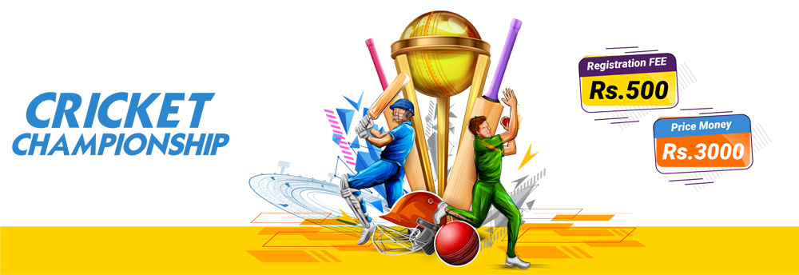
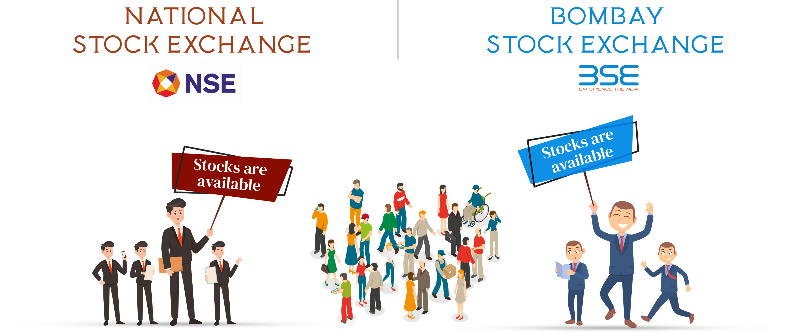
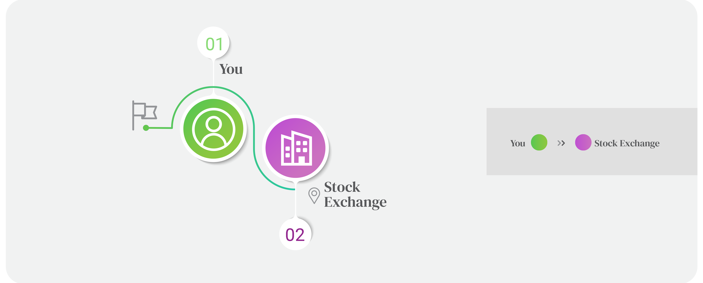
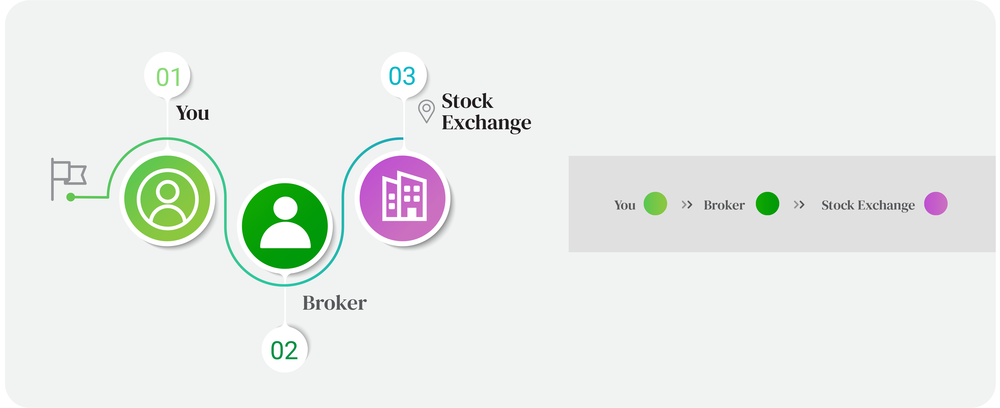
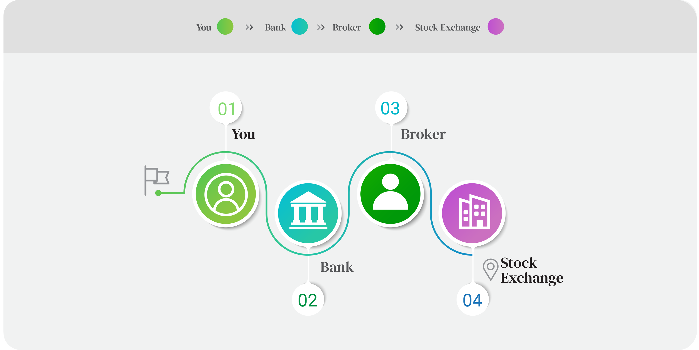

There was a cricket tournament of one month duration and a village team would like to participate in the tournament. It costs 500
INR for registration and the winner would be awarded Rs 3000 prize money.

But the barrier was registration fees, 500 rupees. A group of teenagers badly wanted to arrange 500 rupees to get participate in the
tournament. Each one of them asked for Rs 500 from their parents and relatives. Unfortunately, none of the parents or relatives had
shown an interest to help them.
“ Did your father give you money ? “
“ No “
“ What about you ? “
“ I didn’t even get a single penny “
“ Ask your aunt, she may help you. “
Unfortunately, everybody has got the same answer,
“ What -- Cricket tournament -- 500 rupees !! -- When is your exam? -- Go and study “
One of the smart guys from the team has come up with an idea. There is no point in asking for a huge amount of money from our parents. We are 11 members,
“ Why can’t we arrange 50 rupees each ?“
That makes sense. They started working on it and each member has arranged 50 rupees and they have enrolled for the champion- ship.
This is actually a typical fundraising process. One of the team members was myself, that was the first fundraising I have done in my life by arranging 50 rupees to participate in a cricket tournament. Most of us will do fundraising in multiple ways.
We can raise a fund of 1 lakh in multiple ways,
1: Collect 25000 rupees from 4 people ( 4 * 25000 = 1 Lakh ) Or
2: Collect 10000 rupees from 10 people, ( 10 * 10000 = 1 Lakh ) Or
3: Collect 5000 rupees from 20 people ( 20 * 5000 = 1 Lakh )
Even the stock market does the same thing. In a single line statement,
“ No “
“ What about you ? “
“ I didn’t even get a single penny “
“ Ask your aunt, she may help you. “
Unfortunately, everybody has got the same answer,
“ What -- Cricket tournament -- 500 rupees !! -- When is your exam? -- Go and study “
One of the smart guys from the team has come up with an idea. There is no point in asking for a huge amount of money from our parents. We are 11 members,
“ Why can’t we arrange 50 rupees each ?“
That makes sense. They started working on it and each member has arranged 50 rupees and they have enrolled for the champion- ship.
This is actually a typical fundraising process. One of the team members was myself, that was the first fundraising I have done in my life by arranging 50 rupees to participate in a cricket tournament. Most of us will do fundraising in multiple ways.
We can raise a fund of 1 lakh in multiple ways,
1: Collect 25000 rupees from 4 people ( 4 * 25000 = 1 Lakh ) Or
2: Collect 10000 rupees from 10 people, ( 10 * 10000 = 1 Lakh ) Or
3: Collect 5000 rupees from 20 people ( 20 * 5000 = 1 Lakh )
Even the stock market does the same thing. In a single line statement,
“ Stock market is a platform which helps companies to raise funds “
“ Ohh, now I got it. “
“ What is that ? “
“ Someone associated with stock market has plenty of funds with them “
“ What do you mean? “
“ If you need funds, just walk into the stock market and collect the funds from them“
“ OOPS ... No ... Never “
“ What is that ? “
“ Someone associated with stock market has plenty of funds with them “
“ What do you mean? “
“ If you need funds, just walk into the stock market and collect the funds from them“
“ OOPS ... No ... Never “
All businesses start small — whether they begin in a garage, a spare bedroom, or a rented office. As companies begin to grow, they
often need more money ( known as capital ) to expand the business and afford their growing needs, such as hiring more employees,
buying computer systems, purchasing other equipment, etc. Many smaller companies rely on banks to lend them money. If the
company raises the funds by getting a loan from the bank, the loan should be paid back. But growing and successful firms have other
options, too, in the financial markets.
Another way to raise funds to expand their business is to come to the public market. For that, the company should list in a stock exchange and the general public will buy the company stocks and in this way, the company will raise the capital. Unlike a bank loan, the money that the company raises through a stock offering to the public need not be paid back because it’s not a loan. The public will buy the company stock, these outside investors and traders continue to hold the stock or they trade the stock.
Another way to raise funds to expand their business is to come to the public market. For that, the company should list in a stock exchange and the general public will buy the company stocks and in this way, the company will raise the capital. Unlike a bank loan, the money that the company raises through a stock offering to the public need not be paid back because it’s not a loan. The public will buy the company stock, these outside investors and traders continue to hold the stock or they trade the stock.
“ A stock exchange is a place where people buy and sell company shares “
Stock exchanges never give money to any company, rather they provide a platform for the companies to get money from the general
public. There are many stock exchanges in India but knowing about two popular and largest stock exchanges in India would be more
than enough.

These are the two major stock exchanges in India, NSE and BSE, where the company can list in any one of these exchanges.
For instance, the company RE Limited is going to be public by listing in the exchange NSE, which can be categorized into
For instance, the company RE Limited is going to be public by listing in the exchange NSE, which can be categorized into
In the primary market, RE Limited gets registered and issues the shares to the public for the first time to raise money. This process is
known as Initial Public Offer ( IPO ), which happens in the primary market. In the primary market, people can buy shares directly from
the company, RE Limited.
Say, RE Limited needs to raise a capital of 100 crores. If the company wants to issue the shares at a higher price the company will have
fewer shares.
IPO Stocks issued click here
click here
click here
“ RE Limited can raise funds of 100 Crores in different number of ways “
Companies generally get listed on the stock exchange through the primary market route. After the IPO, the company gets listed in the
exchange. Once the company shares are available from the stock exchange, investors or traders can do the transactions ( buy or sell
the stocks ) through the stock exchange.
If the stock RE Limited is available in the exchange NSE, then people can directly buy RE Limited stocks from the stock exchange. Stock
exchanges are a secondary market.
For instance, you bought 50 shares of RE Limited @ 100 rupees through the NSE exchange. You hold the stock for 5 days and the stock
price has moved to 120 rupees, you exit the stocks and book the profit.
Entry price : 100 Quantity : 50 Exit price : 120
Profit : [ Sell price - Buy price ] * Quantity
: [ 120 - 100 ] * 50 = 1000 rupees.
Profit : [ Sell price - Buy price ] * Quantity
: [ 120 - 100 ] * 50 = 1000 rupees.

You have made a profit of 1000 rupees from this trade. But the question is,
How did you make a 1000 rupees profit ?
Who gave you 1000 rupees ?
Who gave you 1000 rupees ?
You cannot directly walk into the NSE head office and buy the stock. You need a mediator between you and the exchange to make your
transaction complete, they are the stockbrokers or brokerage firms. Stockbroker is your gateway to stock exchanges.
First and foremost you need to start an account with a brokerage firm. The Brokerage firm can offer you a trading account. You have to provide your documents to open the trading account from the broker, after the document verification the broker will activate the trading account. As the name stands, the purpose of trading accounts is only to trade.
First and foremost you need to start an account with a brokerage firm. The Brokerage firm can offer you a trading account. You have to provide your documents to open the trading account from the broker, after the document verification the broker will activate the trading account. As the name stands, the purpose of trading accounts is only to trade.
“ What is a trade ? “
“ Any stock transactions that happens through your trading account is a trade “
“ Can we make an entry and exit from a stock on the same day “
“ Yes, you can. Which is commonly called the intraday trades“
“ How many intraday trades can we do per day? “
“ As much as you can, you have to have enough money in your trading account “
“ Can we buy and hold a stock for a long time in a trading account? “
“ No, it’s not possible in a trading account “
“ Any stock transactions that happens through your trading account is a trade “
“ Can we make an entry and exit from a stock on the same day “
“ Yes, you can. Which is commonly called the intraday trades“
“ How many intraday trades can we do per day? “
“ As much as you can, you have to have enough money in your trading account “
“ Can we buy and hold a stock for a long time in a trading account? “
“ No, it’s not possible in a trading account “
You can place buy orders and sell orders through your trading account. Brokers will make money from clients as brokerage charges.
Clients should pay a brokerage fee for every executed trade they make through the trading account. Many stockbrokers will have
different brokerage schemes and they will come up with many strategies to attract the customers. The two kinds of brokers who have
different operating strategies are,
The brokerage charges of discount brokers will be comparatively very less than the full-service brokers. The strategy is to collect a very
small brokerage fee from a large group of customers. They keep promoting their products and services to their large group of clients
and possibly they generate different sources of income. Discount brokers operate mostly in online trading platforms.
Full-service brokerage charges are higher than discount brokers. They have a wide variety of services like investment advice, relationship management, financial planning, etc. Sometimes they provide trading advice to generate more brokerage from the clients.
But in today’s business, the competition is challenging between the full-service brokers and discount brokers, but that brings an immense quality of service to the clients. The ultimate aim of any kind of broker is to provide a good quality service and generate money from the clients because they are running a business. The full-service broker also named as Traditional brokers.
Full-service brokerage charges are higher than discount brokers. They have a wide variety of services like investment advice, relationship management, financial planning, etc. Sometimes they provide trading advice to generate more brokerage from the clients.
But in today’s business, the competition is challenging between the full-service brokers and discount brokers, but that brings an immense quality of service to the clients. The ultimate aim of any kind of broker is to provide a good quality service and generate money from the clients because they are running a business. The full-service broker also named as Traditional brokers.

Any kind of stockbroker should have a stockbroking license. If you want to trade the stocks from both the exchanges NSE and BSE
through your trading account, your broker should be a member of these exchanges NSE and BSE.
“ A stock exchange is a place where people buy and sell company shares “
“ Who will give us money to buy stocks from the exchange? “
“ You have to use your own money “
“ Oh, I thought the broker will give us money to trade “
“ No, you have to deposit money to broker’s trading account “
“ How can I deposit money into a trading account? “
“ With the help of a bank “
“ You have to use your own money “
“ Oh, I thought the broker will give us money to trade “
“ No, you have to deposit money to broker’s trading account “
“ How can I deposit money into a trading account? “
“ With the help of a bank “
While starting a trading account you have to submit your bank proof and the specified bank will be linked with your trading account.
You can deposit money to a trading account through the bank which is linked to your trading account. You can have multiple bank
accounts linked to your trading account. You can use multiple bank accounts to deposit funds to a trading account but the withdrawals
are only processed to the primary bank account.

Bank and the broker are the two financial intermediaries which come in between you and the exchange to initiate a trade from the
exchange.
“ Bank will help you to deposit and withdraw the money to and from the trading account “
Once you bought a stock through a trading account, you cannot hold the stock for a long time in the broker’s trading account. Your
broker has to give you one more account to hold your stocks which is called,
“ I heard some stories about the Demat account? “
“ What sort of stories? “
“ Many investors made millions by holding shares for a long time”
“ Yes, before 1996 the share certificates were in paper format “
“ Was there no Demat account by 1996 ?“
“ No. Post 1996 the share certificates were converted into digital format. “
“ Who will provide the Demat account services “
“ A Depository, which offers the service of Demat account “
“ What sort of stories? “
“ Many investors made millions by holding shares for a long time”
“ Yes, before 1996 the share certificates were in paper format “
“ Was there no Demat account by 1996 ?“
“ No. Post 1996 the share certificates were converted into digital format. “
“ Who will provide the Demat account services “
“ A Depository, which offers the service of Demat account “
The process of converting paper format share certificates into digital format share certificates is called Dematerialization, often
abbreviated as Demat. That’s why the name Demat account. The share certificates are stored in the Demat account in digital format.
[ I still remember an interesting quote from my father about the stock market. “ Instead of giving birth to my son, if I bought and held
a good stock by 1988, that would have added some productivity to my life. At least I would have been a millionaire by now. “ ]
Only Depositories will offer Demat accounts. At present only two depositories are offering Demat account services. They are,
National Securities Depository Limited (NSDL) and Central Depository Services (India) Limited. There is no difference between NSDL
and CDSL. There was a time when I required a Sim card, I directly walked into a mobile store to get a SIM card and activated it on the
same day. But here, you cannot directly walk into a Depository office to open and activate a Demat account. You need to contact a
Depository participant to get the Demat account service. A depository participant acts as an agent to the Depository.
“ A Depository Participant is a member of the depository (CDSL or NSDL) “
Once your Demat account is activated through a depository participant, then the broker will link your trading account and Demat
account.
Let’s look at the intermediaries between you and the exchange,
Let’s look at the intermediaries between you and the exchange,
“ What should I do if I want to invest in the stock, RE Limited? “
“ You have to deposit funds to your trading account “
“ What is next ? “
“ Buy the stock RE Limited through your trading account. “
“ How does it become an investment if I buy the stock through my trading account? ”
“ After 2 working days, the stock will be credited to your Demat account. “
“ Oh, anything else do I have to do after 2 working days? “
“ Once the stock comes to the Demat account, hold the stock as long as you want. “
“ Is this what people call a typical investment? “
“ Yes, investing in a stock means holding that particular stock in your Demat account.“
“ Why does it take 2 working days to credit the Demat account?
“ It’s because of T + 2 Day settlement “
“ Sorry, I didn’t get anything about the T + 2 Day settlement? “
“ You have to deposit funds to your trading account “
“ What is next ? “
“ Buy the stock RE Limited through your trading account. “
“ How does it become an investment if I buy the stock through my trading account? ”
“ After 2 working days, the stock will be credited to your Demat account. “
“ Oh, anything else do I have to do after 2 working days? “
“ Once the stock comes to the Demat account, hold the stock as long as you want. “
“ Is this what people call a typical investment? “
“ Yes, investing in a stock means holding that particular stock in your Demat account.“
“ Why does it take 2 working days to credit the Demat account?
“ It’s because of T + 2 Day settlement “
“ Sorry, I didn’t get anything about the T + 2 Day settlement? “
Let’s recall the question again,
How did you make a 1000 rupees profit ?
Who gave you 1000 rupees ?
Who gave you 1000 rupees ?
You bought 50 shares of RE Limited at the price of 100 rupees on Monday.
You sold 50 shares of RE Limited at the price of 120 rupees on Friday.
You sold 50 shares of RE Limited at the price of 120 rupees on Friday.
A trade will execute in the stock market only if the seller price and buyer price get an exact match. Every buyer is buying from a seller
which means on Monday you bought 50 shares of RE Limited from an unknown seller who was already holding RE Limited in his / her
Demat account. On Friday, you sold 50 shares of RE Limited from your Demat account to an unknown buyer which means some buyer
bought 50 shares of RE Limited from you.
Price matching click here
click here
The above trade of RE Limited was executed when there was a buyer to buy 50 quantities and there was a seller to sell 50 quantities
and both of their prices got matched and the trade was executed. After a successful trade, the exchange has to ensure that the buyer
will get 50 shares of RE Limited in his Demat account and the seller will get 50 shares worth money from the buyer.
“ Buyer will get 50 shares of RE Limited from the seller at the price of 100 “
“ 5000 rupees will be credited to sellers trading account from the buyer “
“ 5000 rupees will be credited to sellers trading account from the buyer “
Brokerage firms will collect charges from both the buyer and the seller because they have executed the trade. Exchanging the shares
and money between buyer and seller is a typical clearing process by the stock exchange. This clearing process will be done by clearing
corporations. The two clearing corporations are NSCCL and ICCL. NSCCL and ICCL are the subsidiaries of NSE and BSE respectively.
“ National Securities Clearing Corporation Limited & Indian Clearing Corporation Limited “
The clearing and settlement for the above trade will take 2 days, that's why the name T + 2 Day settlement. So your trades have
executed like this,
Monday, you bought 50 shares at the price of 100 rupees. By the end of the day, the broker will collect ( debit ) 5000 rupees from your trading account.
Tuesday, the money required to buy the shares will be collected by the exchange.
Wednesday, the money will be credited to the seller’s account. The 50 shares from the seller will be credited to your broker and the brokerage firm will credit the shares into your Demat account by the end of the day.
Monday refers to the Trade day which is also called ‘ T - Day ‘ in the stock market.
Tuesday is the day after a trading day, which is also called ‘ T+1 Day ‘ in the stock market.
Wednesday is ‘ T + 2 Day ‘, where the stock will be credited to your Demat account.
Thursday onwards the shares will be available for a transaction.
Saturday and Sunday are market holidays. If you buy any stock on Friday, then Friday will be the T - Day. Monday will be the T + 1 Day and Tuesday will be the T + 2 day. You will get the shares to your Demat account only on Tuesday evening.
Monday, you bought 50 shares at the price of 100 rupees. By the end of the day, the broker will collect ( debit ) 5000 rupees from your trading account.
Tuesday, the money required to buy the shares will be collected by the exchange.
Wednesday, the money will be credited to the seller’s account. The 50 shares from the seller will be credited to your broker and the brokerage firm will credit the shares into your Demat account by the end of the day.
Monday refers to the Trade day which is also called ‘ T - Day ‘ in the stock market.
Tuesday is the day after a trading day, which is also called ‘ T+1 Day ‘ in the stock market.
Wednesday is ‘ T + 2 Day ‘, where the stock will be credited to your Demat account.
Thursday onwards the shares will be available for a transaction.
Saturday and Sunday are market holidays. If you buy any stock on Friday, then Friday will be the T - Day. Monday will be the T + 1 Day and Tuesday will be the T + 2 day. You will get the shares to your Demat account only on Tuesday evening.
T + 2 Settlement click here
click here
“ Are you able to answer those questions now? “
“ Yes , ofcourse “
“ How did you make a 1000 rupees profit? “
“ I did 2 trades. The first trade was on Monday and the other trade was on Friday. “
“ What was your investment on Monday? “
“ I bought the shares for 5000 rupees on Monday “
“ Which price did you sell the shares?
“ I sold the shares for 6000 rupees to my counterparty ”
“ Who gave you 1000 rupees? “
“ My counterparty, who bought 6000 rupees worth shares from me on Friday. “
“ When can I withdraw my profit?
“ Yes , ofcourse “
“ How did you make a 1000 rupees profit? “
“ I did 2 trades. The first trade was on Monday and the other trade was on Friday. “
“ What was your investment on Monday? “
“ I bought the shares for 5000 rupees on Monday “
“ Which price did you sell the shares?
“ I sold the shares for 6000 rupees to my counterparty ”
“ Who gave you 1000 rupees? “
“ My counterparty, who bought 6000 rupees worth shares from me on Friday. “
“ When can I withdraw my profit?
You can withdraw the profit once you receive the money in your trading account. Here, You have sold RE Limited on Friday from your
Demat account.
Friday was the T Day, the stock will be blocked on the same day.
Saturday and Sunday are holidays. So, this won’t count.
Monday will be the T + 1 Day.
Tuesday will be the T+2 day,
When you sell the stock from your DEMAT account, on the same day the stock gets blocked. Before T + 2 day the shares are given to the exchange. You will receive the funds from the buyer on T + 2 Day and which will be credited to your trading account. You can place a withdrawal request from your trading account. The money will be credited back to your linked bank account ( primary bank account ).
Friday was the T Day, the stock will be blocked on the same day.
Saturday and Sunday are holidays. So, this won’t count.
Monday will be the T + 1 Day.
Tuesday will be the T+2 day,
When you sell the stock from your DEMAT account, on the same day the stock gets blocked. Before T + 2 day the shares are given to the exchange. You will receive the funds from the buyer on T + 2 Day and which will be credited to your trading account. You can place a withdrawal request from your trading account. The money will be credited back to your linked bank account ( primary bank account ).
“ What if someone makes any defaults on a transaction? “
“ It won’t happen because every activity is under the control of SEBI. “
“ It won’t happen because every activity is under the control of SEBI. “
The Securities and Exchange Board of India (SEBI) is the Regulator for the Securities market in India owned by the Government of India,
often referred to as SEBI. Sebi regulates the activities of market participants and financial intermediaries. The main objective of Sebi
includes promoting the development of the stock exchanges and making sure that all the activities in the securities market include the
activities of Exchanges, Depository, Depository Participants, Stock Broker and other entities of stock markets should conduct their
business fairly.
FAQ
Stock listing refers to the company's shares being officially traded on a stock exchange.
A company must meet a series of listing requirements.
A company can have its listing in both BSE and NSE, or only in one exchange. If a company has its listing in both exchanges,
the share prices in BSE and NSE may have very slight differences depending on the buyers and sellers.
Yes. A broker can offer Demat account service from the depository, NSDL or CDSL. In this case,
the broker will be the depository participant. And they will charge a small depository participant charge ( DP charge ).
The management of a company gives up ownership by allowing others to invest money and buy part of the company.
A company issues stocks only when large amounts of capital are needed.
Settlement holiday happens when stock exchanges are open but the depositories are closed.
It occurs only a few times a year. Settlement holiday impacts a little bit of delay to credit shares to your Demat account.
You will be notified of settlement holidays by your broker in advance.
Charges will be collected from your trading account.
Yes, we have to pay exchange transaction charges after your trades.
Depositories never charge if we buy shares and hold in the Demat account. But we have to pay a small amount to
depositories only when we sell shares from our Demat account.
If you have enough capital in your trading account, you can buy stocks up to your available capital.
Normal settlement duration is by max T + 2 days. But there are situations, wherein it might take one more day
extra only if a short delivery occurs. Short delivery is a rare scenario and if it exists, then you will receive the stocks
to your Demat account only on T + 3 days.